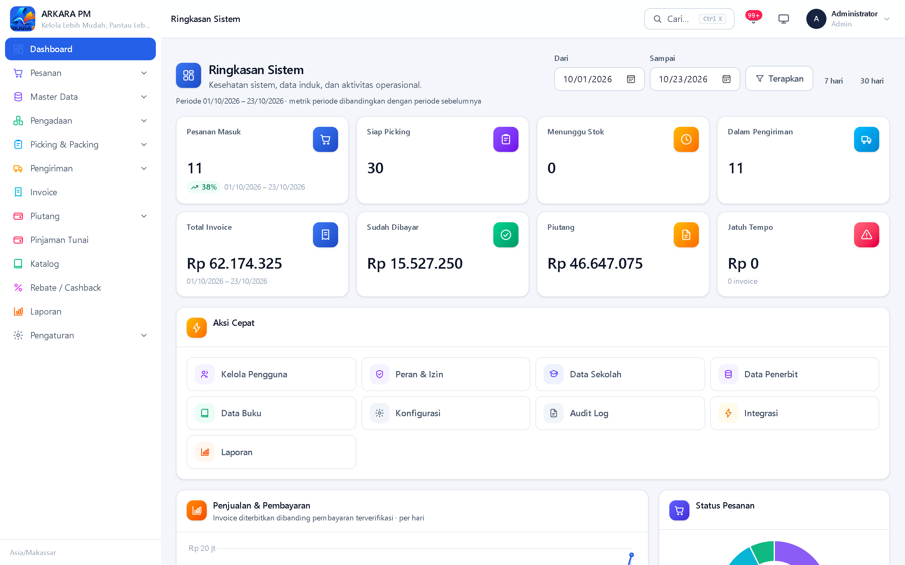

Bagian I
Sebelum menyentuh tombol apa pun, mari kita pahami dulu apa itu ARKARA PM, masalah apa yang dijawabnya, siapa saja yang memakainya, dan bagaimana bagian-bagiannya saling terhubung.
ARKARA PM adalah singkatan dari Aplikasi Rekapitulasi, Kendali, dan Analisis Rekening dan Administrasi — Prana Media. Secara sederhana: ini adalah satu tempat untuk mengurus seluruh pekerjaan penjualan buku sekolah, mulai dari data sekolah dan buku, penerimaan barang di gudang, pesanan dari sekolah, pengiriman, penagihan, sampai laporan keuangan.
Slogan aplikasi ini, “Kelola Lebih Mudah, Pantau Lebih Akurat”, merangkum dua hal yang ingin dicapai: pekerjaan administrasi menjadi lebih ringkas, dan angka yang dilaporkan dapat dipertanggungjawabkan karena setiap perubahan tercatat.
Penjualan buku sekolah punya ciri khas: jumlah sekolahnya banyak, judul bukunya ribuan, harga bisa berbeda per wilayah, dan pembayarannya sering mengangsur. Bila dikerjakan dengan buku besar kertas dan lembar kerja terpisah, muncul beberapa kesulitan yang berulang:
ARKARA PM menjawab kelima hal itu dengan cara berikut:
| Masalah | Cara aplikasi menjawab |
|---|---|
| Stok tidak sinkron | Stok punya dua angka: fisik (barang nyata di gudang) dan reservasi (sudah dijanjikan ke pesanan). Yang tersedia untuk dijual adalah selisihnya. |
| Pesanan tertinggal | Setiap pesanan punya status yang bergerak otomatis, dan menu Pesanan dapat disaring per status maupun per sumber. |
| Piutang tidak terpantau | Menu Piutang mengelompokkan tagihan yang belum dibayar, sebagian dibayar, dan yang sudah jatuh tempo. |
| Perhitungan pajak | Pajak dihitung otomatis oleh satu komponen terpusat, dengan tarif yang dapat diatur pada Profil Perusahaan. Buku tidak dikenai PPN; barang lainnya dikenai PPN dan pajak barang lainnya. |
| Riwayat hilang | Setiap tindakan penting dicatat pada Audit Log lengkap dengan pengguna, waktu, dan alamat IP. |
Aplikasi mengenal enam peran (role). Setiap orang yang masuk ke aplikasi memegang tepat satu peran, dan peran itulah yang menentukan menu apa yang terlihat serta tombol apa yang boleh ditekan.
| Peran | Tugas utama | Ringkasan kewenangan |
|---|---|---|
| Admin | Mengurus sistem secara keseluruhan | Akses penuh ke seluruh modul, termasuk pengguna, peran, dan konfigurasi. |
| Operator Pesanan | Menginput dan memvalidasi pesanan | Membuat, mengubah, dan mengonfirmasi pesanan; melihat stok dan laporan. |
| Gudang | Mengurus barang fisik | Penerimaan barang, mutasi stok, back order, picking, packing, dan pengiriman. |
| Keuangan | Mengurus tagihan dan uang masuk | Invoice, pembayaran, piutang, dan melihat rekap rebate. |
| Sales / PIC | Menangani sekolah yang ditugaskan | Melihat sekolah dan transaksinya, membuat pesanan, dan melihat rekap rebate. |
| Pimpinan | Memantau dan mengevaluasi | Dashboard manajemen, laporan, audit log, dan rekap rebate. |
Pembahasan rinci setiap peran — termasuk daftar izinnya satu per satu — ada di Bagian III.
Modul-modul ARKARA PM bukan kumpulan layar yang berdiri sendiri. Mereka membentuk satu rantai kerja yang mengalir dari kiri ke kanan seperti berikut.
Data sekolah & buku → Penerimaan barang → Stok siap → Pesanan (dikonfirmasi) → Picking → Packing → Pengiriman → Invoice → Pembayaran → Rebate → Laporan & Audit Log
Setiap mata rantai menyerahkan sesuatu kepada mata rantai berikutnya:

Aplikasi ini memakai beberapa istilah yang akan sering muncul. Pahami dulu di sini, karena bab-bab selanjutnya akan menganggap Anda sudah mengenalnya.
| Istilah | Arti sederhana |
|---|---|
| SKU / Kode barang | Kode unik sebuah barang, misalnya 1545170220. Dipakai agar barang tidak tertukar. |
| Zona harga | Pengelompokan wilayah dengan harga jual tersendiri. Harga tiap zona diisi pada data buku dan dipilih saat pesanan dibuat. |
| Reservasi | Jumlah barang yang sudah “dipesan” untuk sebuah pesanan, tetapi belum keluar dari gudang. |
| Back order | Sisa pesanan yang belum bisa dipenuhi karena stok kurang. Dicatat agar tidak terlupakan. |
| Picking | Kegiatan mengambil barang dari rak sesuai daftar. |
| Packing | Kegiatan mengemas barang yang sudah diambil agar siap kirim. |
| Surat jalan | Dokumen yang menemani barang saat dikirim. |
| Invoice | Tagihan resmi kepada sekolah atas barang yang dikirim. |
| Piutang | Uang yang masih harus dibayar sekolah kepada kita. |
| Hutang | Pada aplikasi ini diartikan sebagai invoice yang sudah dibayar tetapi barangnya belum dikirim. |
| Rebate / cashback | Potongan persentase untuk sekolah yang diatur pada data sekolah dan otomatis diterapkan pada nota pesanan. |
| Jatuh tempo | Tanggal terakhir invoice seharusnya dibayar. |
| DPP | Dasar Pengenaan Pajak — nilai yang menjadi dasar perhitungan pajak. |
| PPN / PPh | Pajak Pertambahan Nilai (ditambahkan) dan Pajak Penghasilan (dipotong). |
Di dunia akuntansi umum, hutang berarti kewajiban kita membayar
pihak lain. Di aplikasi ini, menu
Barang Belum Dikirim (/finance/hutang)
memakai kata hutang untuk hal yang berbeda: invoice yang
sudah dibayar sekolah tetapi barangnya belum
dikirim — jadi ini kewajiban kita, bukan kewajiban sekolah. Jangan
tertukar dengan menu Piutang.
| Kelompok | Isi |
|---|---|
| Dashboard | Enam tampilan berbeda, satu untuk tiap peran. |
| Master Data (10 layar) | Sekolah, Penerbit, Buku, Barang Lainnya, Kategori Buku, Sumber Pesanan, Kurir, Metode Kirim, Metode Bayar, Konfigurasi. |
| Pesanan | Nota pesanan, pembuatan dan pengubahan pesanan, konfirmasi, pengembalian ke Draft, pembatalan, nota gudang, dan surat pesanan. |
| Stok, Gudang, dan Pengadaan | Rangkuman stok, mutasi stok, penerimaan barang, back order, serta pesanan ke penerbit. |
| Picking & Packing | Daftar picking, pencatatan hasil picking, penyelesaian packing. |
| Pengiriman | Pembuatan pengiriman, konfirmasi dengan bukti foto, surat jalan. |
| Keuangan | Invoice, piutang, barang belum dikirim, pembayaran, dan rekap rebate. |
| Laporan | Tujuh jenis laporan dengan ekspor CSV. |
| Pengaturan | Profil perusahaan, pengguna, jam lembur, peran & izin, integrasi & impor, audit log. |